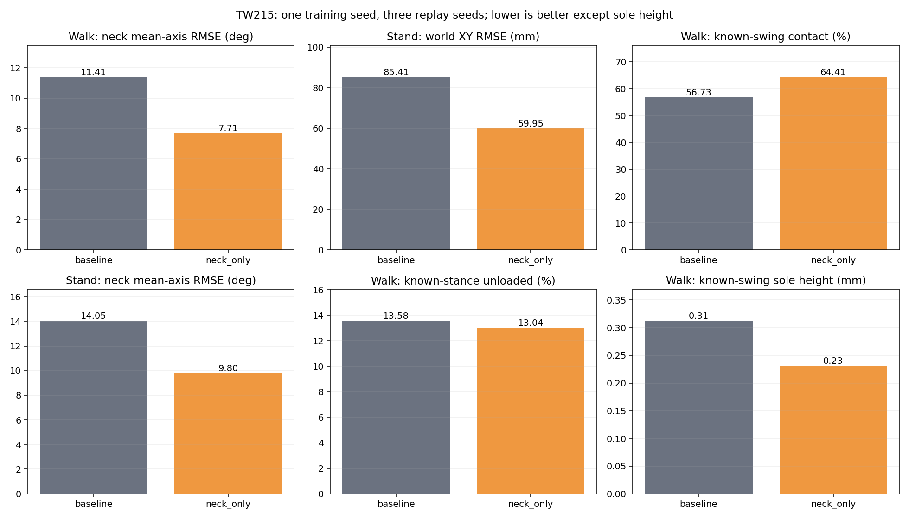
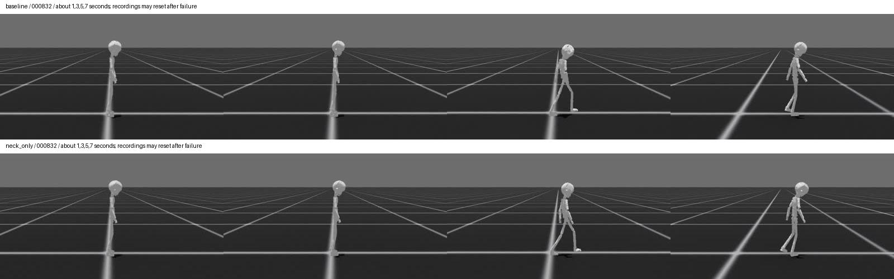
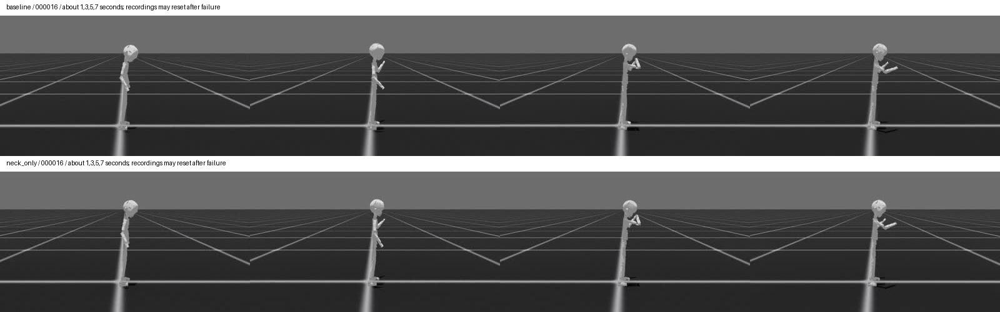
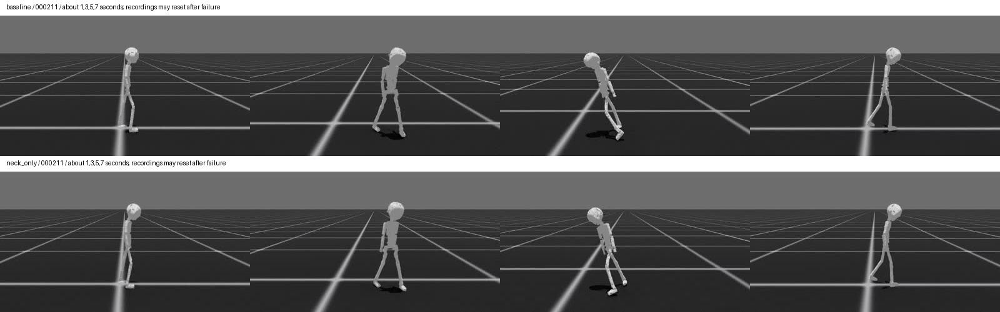

本版可归档为平地走路阶段成果，但不作为全动作验收通过。两组从TW202 baseline相同权重续训2000轮，训练seed42，验证3个seed。neck-only相对本轮baseline：走路头颈平均轴RMSE从11.41降至7.71度（约32%）；站立从14.05降至9.80度，世界XY误差85.41降至59.95mm（约30%），完成率5/6至6/6。走路两组均24/24。
代价：走路XY误差46.63至47.85mm，手腕6.52至7.08mm，骨盆yaw6.38至8.18度。已知摆动相接触56.73%至64.41%，脚底最低点平均高度0.313至0.231mm；接触时最低角点速度代理0.0433至0.0539m/s。该速度含滚动和模型误差，不等于真实接触点滑动。已知接触覆盖约55%，不能推广到未知时相。头颈跟踪改善不等于高频抖动已消除。
转向baseline1/3、neck-only0/3；跑步机及非平地均0/3。合成静止诊断分别7.86s和4.98s提前终止，不能按不等时长净位移比较优劣。与上一轮TW202 baseline相比，新两组平地XY误差均高于旧41.40mm，合成静止也未保持旧20s完成，因此不覆盖旧权重。
视觉检查为000832走路、000016站立上肢、000211转向在约1/3/5/7秒的关键帧抽查，并非逐帧观看所有视频。走路抽查保持直立推进；转向有明显姿态倾斜，后续重置不算恢复。全部60段视频已通过自动编码/帧数校验；相机高度审计通过。原始NPY20fps、机器人50fps，两者未相位对齐。
建议保留两组与旧baseline：neck-only作为头颈和站立表达候选，后续优先处理摆动期拖地与转向稳定性，避免仅靠加长训练。原始接触时序保持不变。本次不启动新实验。

完成参考周期不等于无滑移。站立限位诊断000346、跑步机和非平地样本单独列出。
| 组 | 平地走路 | 站立上肢 | 转向 | 站立限位诊断 | 跑步机 | 非平地 |
|---|---|---|---|---|---|---|
| baseline | 24/24 | 5/6 | 1/3 | 2/3 | 0/3 | 0/3 |
| neck_only | 24/24 | 6/6 | 0/3 | 3/3 | 0/3 | 0/3 |
| 组 | 类别 | 世界XY RMSE mm | 头颈三轴平均RMSE ° | 骨盆yaw RMSE ° | 手腕误差 mm |
|---|---|---|---|---|---|
| baseline | flat_forward | 46.63 | 11.41 | 6.38 | 6.52 |
| baseline | standing_upper | 85.41 | 14.05 | 15.72 | 6.92 |
| neck_only | flat_forward | 47.85 | 7.71 | 8.18 | 7.08 |
| neck_only | standing_upper | 59.95 | 9.80 | 12.93 | 7.08 |
排除首秒；不同终止时间不可直接用净位移排名。此项是分布外压力测试，不是完整人体动作。
| 组 | 目标 | 时长s | 净位移mm | 最大偏移mm | 终止 |
|---|---|---|---|---|---|
| baseline | corrected_static | 7.86 | 128.40 | 128.40 | {'anchor_pos': 1} |
| baseline | corrected_upper | 8.28 | 242.72 | 242.72 | {'anchor_pos': 1, 'anchor_ori': 1} |
| neck_only | corrected_static | 4.98 | 123.59 | 123.59 | {'anchor_pos': 1} |
| neck_only | corrected_upper | 4.42 | 137.42 | 137.42 | {'anchor_pos': 1} |
原始NPY为20fps；机器人为50fps参考时间。两者不按播放时间同步。机器人视频失败后可能重置，不能把后续片段视为连续成功。
原始NPY视频
原始NPY为20fps；机器人为50fps参考时间。两者不按播放时间同步。机器人视频失败后可能重置，不能把后续片段视为连续成功。
原始NPY视频
原始NPY为20fps；机器人为50fps参考时间。两者不按播放时间同步。机器人视频失败后可能重置，不能把后续片段视为连续成功。
原始NPY视频